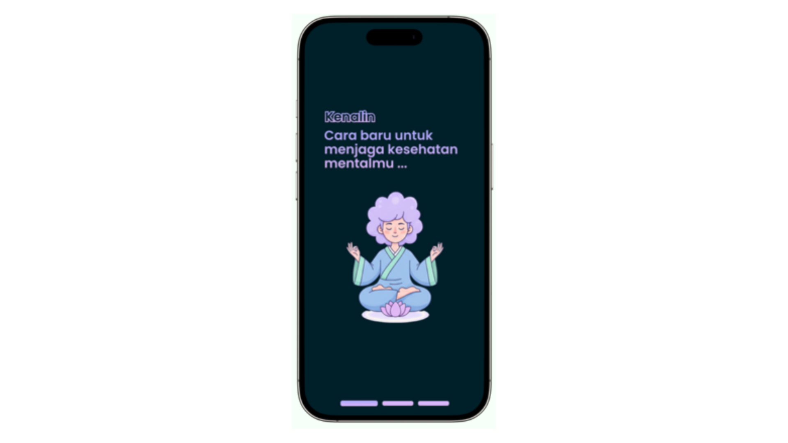

UI/UX Design · Competition
Senandika
Inovasi platform kesehatan mental yang dirancang inklusif khusus bagi penyandang tunarungu dan tunawicara.
- Figma
- UI Design
- UX Research
- Prototyping
Kumpulan project yang pernah saya kerjakan, baik secara individu maupun bersama tim.
Sebagian besar project saya berfokus pada UI/UX Design, terutama project yang dikembangkan untuk mengikuti berbagai lomba dan kompetisi.
Berbagai project desain antarmuka dan pengalaman pengguna yang saya kerjakan, termasuk project untuk kompetisi dan startup.

UI/UX Design · Competition
Inovasi platform kesehatan mental yang dirancang inklusif khusus bagi penyandang tunarungu dan tunawicara.
Mobile App Design · Architecture
Perancangan arsitektur informasi dan UI untuk aplikasi StudyBud (pencarian teman belajar) dan PlanU (edukasi kesehatan & keluarga berencana).
Startup · Branding & Strategy
Perintisan startup IT penyedia layanan UI/UX Design, mencakup penentuan identitas brand, desain logo, dan strategi pemasaran media sosial.
System Concept · Competition
Konsep aplikasi manajemen keuangan terdesentralisasi yang mengeksplorasi integrasi antara teknologi Blockchain dan Artificial Intelligence.